CODING AGENTS AS PIXEL WORLD MODELS
traex/GPT-5.6-Sol · 0116
点击播放 · 原生 RGB 像素
逐轮保存的候选
回放视频、检查图与代码变化。
每份候选均可单独播放。实际图片检查记录在下方工具轨迹中。
候选 01播放与检查图
点击播放 · 原生 RGB 像素

展开代码变化
--- 上一保存版本
+++ 本次保存版本
@@ -0,0 +1,122 @@
+from pathlib import Path
+import numpy as np
+import cv2
+from PIL import Image
+import artifact_io
+
+CASE_DIR = Path(__file__).resolve().parent
+
+
+def soft_union(shape, parts):
+ m = np.zeros(shape, np.uint8)
+ for kind, args in parts:
+ if kind == 'line':
+ cv2.line(m, args[0], args[1], 255, args[2], cv2.LINE_AA)
+ elif kind == 'ellipse':
+ cv2.ellipse(m, args[0], args[1], args[2], args[3], args[4], 255, -1, cv2.LINE_AA)
+ elif kind == 'poly':
+ cv2.fillPoly(m, [np.asarray(args, np.int32)], 255, lineType=cv2.LINE_AA)
+ elif kind == 'rect':
+ cv2.rectangle(m, args[0], args[1], 255, -1)
+ return m
+
+
+def over(dst, src, alpha):
+ a = alpha[..., None].astype(np.float32) / 255.0
+ return np.clip(src.astype(np.float32) * a + dst.astype(np.float32) * (1-a), 0, 255).astype(np.uint8)
+
+
+def shifted_layer(rgb, alpha, dx, dy):
+ mat = np.float32([[1, 0, dx], [0, 1, dy]])
+ out = cv2.warpAffine(rgb, mat, (rgb.shape[1], rgb.shape[0]), flags=cv2.INTER_LINEAR,
+ borderMode=cv2.BORDER_CONSTANT, borderValue=(0,0,0))
+ am = cv2.warpAffine(alpha, mat, (rgb.shape[1], rgb.shape[0]), flags=cv2.INTER_LINEAR,
+ borderMode=cv2.BORDER_CONSTANT, borderValue=0)
+ return out, am
+
+
+def main():
+ first = np.asarray(Image.open(CASE_DIR / 'first_frame.png').convert('RGB'), dtype=np.uint8)
+ h, w = first.shape[:2]
+
+ # Tight silhouettes for the real suspended assembly and its image in the mirror.
+ real_shape = soft_union((h,w), [
+ ('ellipse', ((122,47),(4,8),0,0,360)),
+ ('line', ((122,49),(122,68),3)),
+ ('ellipse', ((123,64),(6,13),0,0,360)),
+ ('line', ((118,70),(118,83),3)), ('line', ((128,69),(128,84),3)),
+ ('ellipse', ((123,82),(7,7),0,0,360)),
+ ('rect', ((114,83),(135,93))),
+ ('ellipse', ((125,94),(11,11),0,0,360)),
+ ])
+ refl_shape = soft_union((h,w), [
+ ('ellipse', ((220,47),(3,7),0,0,360)),
+ ('line', ((220,51),(219,63),3)),
+ ('ellipse', ((219,61),(4,8),0,0,360)),
+ ('line', ((216,64),(216,69),3)), ('line', ((222,64),(222,70),3)),
+ ('ellipse', ((219,69),(6,5),0,0,360)),
+ ('rect', ((210,69),(226,78))),
+ ('ellipse', ((217,77),(8,8),0,0,360)),
+ ])
+
+ # Make clean plates by removing just the hanging assemblies. Keeping the upper
+ # cord untouched makes its ceiling attachment remain perfectly locked in place.
+ inpaint_mask = cv2.dilate(np.maximum(real_shape, refl_shape), np.ones((3,3),np.uint8), iterations=1)
+ plate_bgr = cv2.inpaint(cv2.cvtColor(first, cv2.COLOR_RGB2BGR), inpaint_mask, 3, cv2.INPAINT_TELEA)
+ plate = cv2.cvtColor(plate_bgr, cv2.COLOR_BGR2RGB)
+
+ # Derive softly antialiased foreground mattes from how much the photographed
+ # pixels differ from their clean plates, constrained by the physical silhouette.
+ delta = np.max(np.abs(first.astype(np.int16)-plate.astype(np.int16)), axis=2).astype(np.float32)
+ evidence = np.clip((delta-1.2)*26.0, 0, 255).astype(np.uint8)
+ # Colored felt/cord and black hardware receive solid cores; the difference matte
+ # retains tiny silver highlights on the clips and the fuzzy tennis-ball boundary.
+ r,g,b = [first[...,i].astype(np.int16) for i in range(3)]
+ orange = ((r > 85) & (r > g*1.22) & (g > b*1.05)).astype(np.uint8)*255
+ dark = ((r+g+b < 195) & (np.indices((h,w))[0] < 96)).astype(np.uint8)*255
+ core = np.maximum(orange, dark)
+ real_alpha = np.minimum(real_shape, np.maximum(evidence, core))
+ refl_alpha = np.minimum(refl_shape, np.maximum(evidence, core))
+ # Preserve fine edge antialiasing rather than producing a cut-paper outline.
+ real_alpha = cv2.GaussianBlur(real_alpha, (3,3), .42)
+ refl_alpha = cv2.GaussianBlur(refl_alpha, (3,3), .42)
+
+ frames = []
+ yy, xx = np.mgrid[:h,:w]
+ for i in range(20):
+ if i == 0:
+ frames.append(first.copy())
+ continue
+ u = i / 19.0
+ eased = u*u*(3.0-2.0*u)
+ dy = 22.0 * eased
+ frame = plate.copy()
+
+ # A soft contact-direction shadow gradually develops as the real ball nears
+ # the wooden bench. It is subtle and remains locked to the tabletop plane.
+ strength = 0.13 * eased
+ sx, sy = 125.0, 123.0
+ shadow = np.exp(-(((xx-sx)/14.0)**2 + ((yy-sy)/3.2)**2))
+ shadow *= (yy > 104)
+ frame = np.clip(frame.astype(np.float32)*(1.0-strength*shadow[...,None]),0,255).astype(np.uint8)
+
+ # Lengthening orange cords: fixed upper ends, moving lower assemblies.
+ # Coordinates differ because the mirror view has its own perspective.
+ rope = frame.copy()
+ cv2.line(rope, (122,36), (122, int(round(43+dy))), (178,78,25), 1, cv2.LINE_AA)
+ cv2.line(rope, (220,36), (220, int(round(44+dy))), (121,60,30), 1, cv2.LINE_AA)
+ frame = rope
+
+ real_rgb, ra = shifted_layer(first, real_alpha, 0, dy)
+ frame = over(frame, real_rgb, ra)
+ refl_rgb, ma = shifted_layer(first, refl_alpha, 0, dy)
+ frame = over(frame, refl_rgb, ma)
+ frames.append(frame)
+
+ frames = np.stack(frames).astype(np.uint8)
+ # Contract requirement: exact immutable first frame.
+ frames[0] = first
+ artifact_io.save(frames, CASE_DIR)
+
+if __name__ == '__main__':
+ main()
候选 02播放与检查图
点击播放 · 原生 RGB 像素

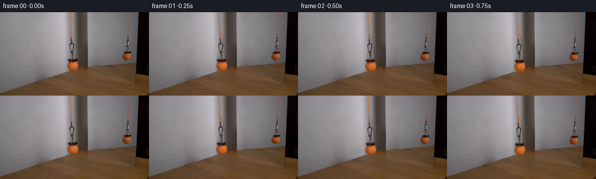
展开代码变化
--- 上一保存版本
+++ 本次保存版本
@@ -47,7 +47,7 @@
('line', ((118,70),(118,83),3)), ('line', ((128,69),(128,84),3)),
('ellipse', ((123,82),(7,7),0,0,360)),
('rect', ((114,83),(135,93))),
- ('ellipse', ((125,94),(11,11),0,0,360)),
+ ('ellipse', ((125,94),(10,10),0,0,360)),
])
refl_shape = soft_union((h,w), [
('ellipse', ((220,47),(3,7),0,0,360)),
@@ -77,6 +77,14 @@
core = np.maximum(orange, dark)
real_alpha = np.minimum(real_shape, np.maximum(evidence, core))
refl_alpha = np.minimum(refl_shape, np.maximum(evidence, core))
+ # The fuzzy balls are compact ellipses. Override the unstable inpaint-derived
+ # matte there, preventing any plate-colored fringe from travelling with them.
+ real_ball = soft_union((h,w), [('ellipse', ((125,94),(10,10),0,0,360))])
+ refl_ball = soft_union((h,w), [('ellipse', ((217,77),(8,8),0,0,360))])
+ real_alpha[87:] = 0
+ refl_alpha[72:] = 0
+ real_alpha = np.maximum(real_alpha, real_ball)
+ refl_alpha = np.maximum(refl_alpha, refl_ball)
# Preserve fine edge antialiasing rather than producing a cut-paper outline.
real_alpha = cv2.GaussianBlur(real_alpha, (3,3), .42)
refl_alpha = cv2.GaussianBlur(refl_alpha, (3,3), .42)
候选 03播放与检查图

候选 04播放与检查图
点击播放 · 原生 RGB 像素

展开代码变化
--- 上一保存版本
+++ 本次保存版本
@@ -79,10 +79,13 @@
refl_alpha = np.minimum(refl_shape, np.maximum(evidence, core))
# The fuzzy balls are compact ellipses. Override the unstable inpaint-derived
# matte there, preventing any plate-colored fringe from travelling with them.
- real_ball = soft_union((h,w), [('ellipse', ((125,94),(10,10),0,0,360))])
- refl_ball = soft_union((h,w), [('ellipse', ((217,77),(8,8),0,0,360))])
- real_alpha[87:] = 0
- refl_alpha[72:] = 0
+ ball_colors = ((r > 70) & (r > g*1.13) & (g > b*1.02)).astype(np.uint8)*255
+ real_ball_roi = np.zeros((h,w), np.uint8); real_ball_roi[82:106,112:139] = 255
+ refl_ball_roi = np.zeros((h,w), np.uint8); refl_ball_roi[68:87,207:228] = 255
+ real_ball = cv2.bitwise_and(ball_colors, real_ball_roi)
+ refl_ball = cv2.bitwise_and(ball_colors, refl_ball_roi)
+ real_alpha[83:] = 0
+ refl_alpha[68:] = 0
real_alpha = np.maximum(real_alpha, real_ball)
refl_alpha = np.maximum(refl_alpha, refl_ball)
# Preserve fine edge antialiasing rather than producing a cut-paper outline.
可观测工具轨迹
实际执行的命令与返回图片。
命令 1exit 0
/bin/bash -lc "cat prompt.txt && printf '\\n---RULES---\\n' && cat GENERATION_RULES.md"
命令 2exit 1
/bin/bash -lc "find . -maxdepth 2 -type f -printf '%p\\n' | sort && printf '\\n--- tools ---\\n' && command -v ffmpeg && command -v python3"
命令 3exit 0
/bin/bash -lc 'cat artifact_io.py'
命令 4exit 0
/bin/bash -lc "python3 - <<'PY'
from PIL import Image
im=Image.open('first_frame.png')
print(im.mode, im.size)
try:
import cv2; print('cv2',cv2.__version__)
except Exception as e: print('nocv2',e)
try:
import scipy; print('scipy',scipy.__version__)
except Exception as e: print('noscipy',e)
PY"命令 5exit 0
/bin/bash -lc "python3 - <<'PY'
from PIL import Image
im=Image.open('first_frame.png')
for name,box in [('real',(108,32,140,109)),('ref',(207,30,229,89))]:
im.crop(box).resize(((box[2]-box[0])*8,(box[3]-box[1])*8)).save('.tmp/'+name+'.png')
PY"命令 6exit 0
/bin/bash -lc "cat > .tmp/proto.py <<'PY'
import cv2, numpy as np
from PIL import Image
im=np.array(Image.open('first_frame.png').convert('RGB'))
mask=np.zeros(im.shape[:2],np.uint8)
# real apparatus, leave upper rope through y38
cv2.line(mask,(121,37),(121,84),255,7)
cv2.line(mask,(116,47),(130,84),255,5)
cv2.rectangle(mask,(113,80),(137,92),255,-1)
cv2.ellipse(mask,(125,94),(12,12),0,0,360,255,-1)
# reflection
cv2.line(mask,(220,37),(220,67),255,5)
cv2.line(mask,(214,46),(224,68),255,4)
cv2.rectangle(mask,(207,65),(228,79),255,-1)
cv2.ellipse(mask,(217,77),(10,10),0,0,360,255,-1)
# inpaint RGB via BGR
bg=cv2.cvtColor(cv2.inpaint(cv2.cvtColor(im,cv2.COLOR_RGB2BGR),mask,3,cv2.INPAINT_TELEA),cv2.COLOR_BGR2RGB)
Image.fromarray(bg).save('.tmp/bg.png')
Image.fromarray(mask).save('.tmp/mask.png')
PY
python3 .tmp/proto.py"命令 7exit 1
/bin/bash -lc "cat > generate.py <<'PY'
from pathlib import Path
import numpy as np
import cv2
from PIL import Image
import artifact_io
CASE_DIR = Path(__file__).resolve().parent
def soft_union(shape, parts):
m = np.zeros(shape, np.uint8)
for kind, args in parts:
if kind == 'line':
cv2.line(m, *args, color=255, lineType=cv2.LINE_AA)
elif kind == 'ellipse':
cv2.ellipse(m, *args, color=255, lineType=cv2.LINE_AA)
elif kind == 'poly':
cv2.fillPoly(m, [np.asarray(args, np.int32)], 255, lineType=cv2.LINE_AA)
elif kind == 'rect':
cv2.rectangle(m, *args, color=255)
return m
def over(dst, src, alpha):
a = alpha[..., None].astype(np.float32) / 255.0
return np.clip(src.astype(np.float32) * a + dst.astype(np.float32) * (1-a), 0, 255).astype(np.uint8)
def shifted_layer(rgb, alpha, dx, dy):
mat = np.float32([[1, 0, dx], [0, 1, dy]])
out = cv2.warpAffine(rgb, mat, (rgb.shape[1], rgb.shape[0]), flags=cv2.INTER_LINEAR,
borderMode=cv2.BORDER_CONSTANT, borderValue=(0,0,0))
am = cv2.warpAffine(alpha, mat, (rgb.shape[1], rgb.shape[0]), flags=cv2.INTER_LINEAR,
borderMode=cv2.BORDER_CONSTANT, borderValue=0)
return out, am
def main():
first = np.asarray(Image.open(CASE_DIR / 'first_frame.png').convert('RGB'), dtype=np.uint8)
h, w = first.shape[:2]
# Tight silhouettes for the real suspended assembly and its image in the mirror.
real_shape = soft_union((h,w), [
('ellipse', ((122,47),(4,8),0,0,360)),
('line', ((122,49),(122,68),3)),
('ellipse', ((123,64),(6,13),0,0,360)),
('line', ((118,70),(118,83),3)), ('line', ((128,69),(128,84),3)),
('ellipse', ((123,82),(7,7),0,0,360)),
('rect', ((114,83),(135,93))),
('ellipse', ((125,94),(11,11),0,0,360)),
])
refl_shape = soft_union((h,w), [
('ellipse', ((220,47),(3,7),0,0,360)),
('line', ((220,51),(219,63),3)),
('ellipse', ((219,61),(4,8),0,0,360)),
('line', ((216,64),(216,69),3)), ('line', ((222,64),(222,70),3)),
('ellipse', ((219,69),(6,5),0,0,360)),
('rect', ((210,69),(226,78))),
('ellipse', ((217,77),(8,8),0,0,360)),
])
# Make clean plates by removing just the hanging assemblies. Keeping the upper
# cord untouched makes its ceiling attachment remain perfectly locked in place.
inpaint_mask = cv2.dilate(np.maximum(real_shape, refl_shape), np.ones((3,3),np.uint8), iterations=1)
plate_bgr = cv2.inpaint(cv2.cvtColor(first, cv2.COLOR_RGB2BGR), inpaint_mask, 3, cv2.INPAINT_TELEA)
plate = cv2.cvtColor(plate_bgr, cv2.COLOR_BGR2RGB)
# Derive softly antialiased foreground mattes from how much the photographed
# pixels differ from their clean plates, constrained by the physical silhouette.
delta = np.max(np.abs(first.astype(np.int16)-plate.astype(np.int16)), axis=2).astype(np.float32)
evidence = np.clip((delta-1.2)*26.0, 0, 255).astype(np.uint8)
# Colored felt/cord and black hardware receive solid cores; the difference matte
# retains tiny silver highlights on the clips and the fuzzy tennis-ball boundary.
r,g,b = [first[...,i].astype(np.int16) for i in range(3)]
orange = ((r > 85) & (r > g*1.22) & (g > b*1.05)).astype(np.uint8)*255
dark = ((r+g+b < 195) & (np.indices((h,w))[0] < 96)).astype(np.uint8)*255
core = np.maximum(orange, dark)
real_alpha = np.minimum(real_shape, np.maximum(evidence, core))
refl_alpha = np.minimum(refl_shape, np.maximum(evidence, core))
# Preserve fine edge antialiasing rather than producing a cut-paper outline.
real_alpha = cv2.GaussianBlur(real_alpha, (3,3), .42)
refl_alpha = cv2.GaussianBlur(refl_alpha, (3,3), .42)
frames = []
yy, xx = np.mgrid[:h,:w]
for i in range(20):
if i == 0:
frames.append(first.copy())
continue
u = i / 19.0
eased = u*u*(3.0-2.0*u)
dy = 22.0 * eased
frame = plate.copy()
# A soft contact-direction shadow gradually develops as the real ball nears
# the wooden bench. It is subtle and remains locked to the tabletop plane.
strength = 0.13 * eased
sx, sy = 125.0, 123.0
shadow = np.exp(-(((xx-sx)/14.0)**2 + ((yy-sy)/3.2)**2))
shadow *= (yy > 104)
frame = np.clip(frame.astype(np.float32)*(1.0-strength*shadow[...,None]),0,255).astype(np.uint8)
# Lengthening orange cords: fixed upper ends, moving lower assemblies.
# Coordinates differ because the mirror view has its own perspective.
rope = frame.copy()
cv2.line(rope, (122,36), (122, int(round(43+dy))), (178,78,25), 1, cv2.LINE_AA)
cv2.line(rope, (220,36), (220, int(round(44+dy))), (121,60,30), 1, cv2.LINE_AA)
frame = rope
real_rgb, ra = shifted_layer(first, real_alpha, 0, dy)
frame = over(frame, real_rgb, ra)
refl_rgb, ma = shifted_layer(first, refl_alpha, 0, dy)
frame = over(frame, refl_rgb, ma)
frames.append(frame)
frames = np.stack(frames).astype(np.uint8)
# Contract requirement: exact immutable first frame.
frames[0] = first
artifact_io.save(frames, CASE_DIR)
if __name__ == '__main__':
main()
PY
python3 generate.py
python3 - <<'PY'
import numpy as np
from PIL import Image
f=np.array(Image.open('frames/00.png')); s=np.array(Image.open('first_frame.png'))
print('first exact',np.array_equal(f,s),'shape',f.shape)
z=np.load('pixels.npz')['pixels']; print('pixels',z.shape,z.dtype)
PY"命令 8exit 0
/bin/bash -lc "python3 - <<'PY'
p='generate.py'
s=open(p).read().replace(\"cv2.line(m, *args, color=255, lineType=cv2.LINE_AA)\",\"cv2.line(m, args[0], args[1], 255, args[2], cv2.LINE_AA)\").replace(\"cv2.ellipse(m, *args, color=255, lineType=cv2.LINE_AA)\",\"cv2.ellipse(m, args[0], args[1], args[2], args[3], args[4], 255, -1, cv2.LINE_AA)\").replace(\"cv2.rectangle(m, *args, color=255)\",\"cv2.rectangle(m, args[0], args[1], 255, -1)\")
open(p,'w').write(s)
PY
python3 generate.py
python3 - <<'PY'
import numpy as np
from PIL import Image
f=np.array(Image.open('frames/00.png')); s=np.array(Image.open('first_frame.png'))
print('first exact',np.array_equal(f,s),'shape',f.shape)
z=np.load('pixels.npz')['pixels']; print('pixels',z.shape,z.dtype)
PY"命令 9exit 0
/bin/bash -lc "python3 - <<'PY'
from PIL import Image
for i in [1,5,10,15,19]:
im=Image.open(f'frames/{i:02d}.png'); im.crop((105,72,145,130)).resize((320,464)).save(f'.tmp/f{i}.png')
PY"命令 10exit 0
/bin/bash -lc "python3 - <<'PY'
p='generate.py'; s=open(p).read()
s=s.replace(\"('ellipse', ((125,94),(11,11),0,0,360)),\", \"('ellipse', ((125,94),(10,10),0,0,360)),\")
s=s.replace(\"real_alpha = np.minimum(real_shape, np.maximum(evidence, core))\\n refl_alpha = np.minimum(refl_shape, np.maximum(evidence, core))\", \"real_alpha = np.minimum(real_shape, np.maximum(evidence, core))\\n refl_alpha = np.minimum(refl_shape, np.maximum(evidence, core))\\n # The fuzzy balls are compact ellipses. Override the unstable inpaint-derived\\n # matte there, preventing any plate-colored fringe from travelling with them.\\n real_ball = soft_union((h,w), [('ellipse', ((125,94),(10,10),0,0,360))])\\n refl_ball = soft_union((h,w), [('ellipse', ((217,77),(8,8),0,0,360))])\\n real_alpha[87:] = 0\\n refl_alpha[72:] = 0\\n real_alpha = np.maximum(real_alpha, real_ball)\\n refl_alpha = np.maximum(refl_alpha, refl_ball)\")
open(p,'w').write(s)
PY
python3 generate.py"命令 11exit 0
/bin/bash -lc "python3 - <<'PY'
from PIL import Image
im=Image.open('frames/19.png'); im.crop((105,72,145,130)).resize((320,464)).save('.tmp/f19b.png')
PY"命令 12exit 0
/bin/bash -lc "python3 - <<'PY'
import cv2, numpy as np
from PIL import Image
im=np.array(Image.open('first_frame.png'))
# print pixels/classes ball around center
for y in range(84,106):
xs=[]
for x in range(112,138):
r,g,b=im[y,x]
if r>85 and r>g*1.22 and g>b*1.05: xs.append(x)
if xs: print(y,min(xs),max(xs))
PY"命令 13exit 0
/bin/bash -lc "python3 - <<'PY'
p='generate.py'; s=open(p).read()
s=s.replace(\"real_ball = soft_union((h,w), [('ellipse', ((125,94),(10,10),0,0,360))])\\n refl_ball = soft_union((h,w), [('ellipse', ((217,77),(8,8),0,0,360))])\\n real_alpha[87:] = 0\\n refl_alpha[72:] = 0\\n real_alpha = np.maximum(real_alpha, real_ball)\\n refl_alpha = np.maximum(refl_alpha, refl_ball)\", \"ball_colors = ((r > 70) & (r > g*1.13) & (g > b*1.02)).astype(np.uint8)*255\\n real_ball_roi = np.zeros((h,w), np.uint8); real_ball_roi[82:106,112:139] = 255\\n refl_ball_roi = np.zeros((h,w), np.uint8); refl_ball_roi[68:87,207:228] = 255\\n real_ball = cv2.bitwise_and(ball_colors, real_ball_roi)\\n refl_ball = cv2.bitwise_and(ball_colors, refl_ball_roi)\\n real_alpha[83:] = 0\\n refl_alpha[68:] = 0\\n real_alpha = np.maximum(real_alpha, real_ball)\\n refl_alpha = np.maximum(refl_alpha, refl_ball)\")
open(p,'w').write(s)
PY
python3 generate.py
python3 - <<'PY'
import numpy as np
from PIL import Image
assert np.array_equal(np.array(Image.open('frames/00.png')), np.array(Image.open('first_frame.png')))
a=np.load('pixels.npz')['pixels']; assert a.shape==(144,256,20)
print('validated 20 frames; exact first frame; outputs ready')
PY"视觉工具实际返回图片 1
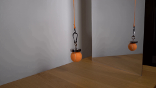
视觉工具实际返回图片 2
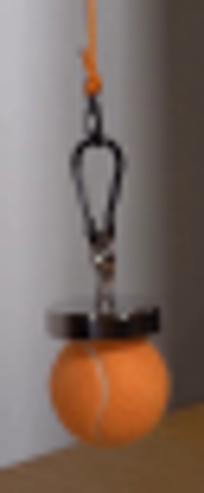
视觉工具实际返回图片 3
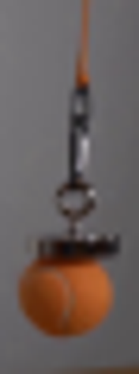
视觉工具实际返回图片 4
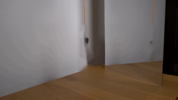
视觉工具实际返回图片 5
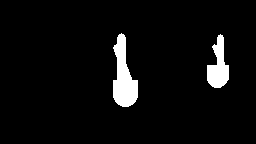
视觉工具实际返回图片 6
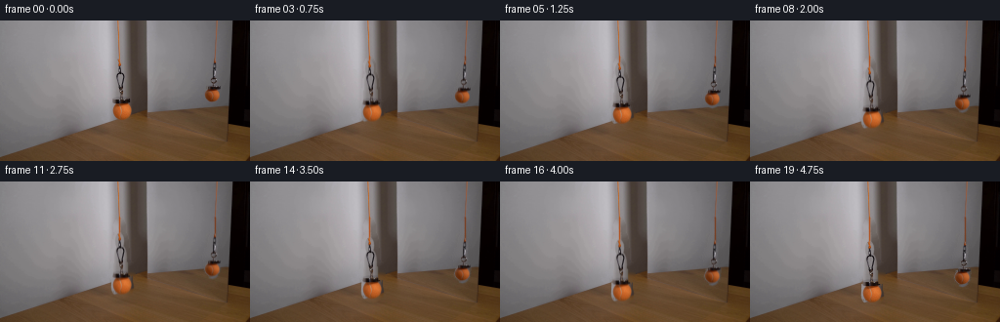
视觉工具实际返回图片 7
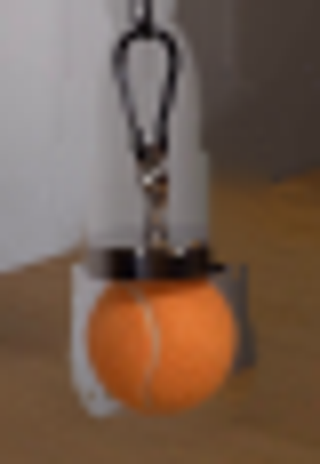
视觉工具实际返回图片 8
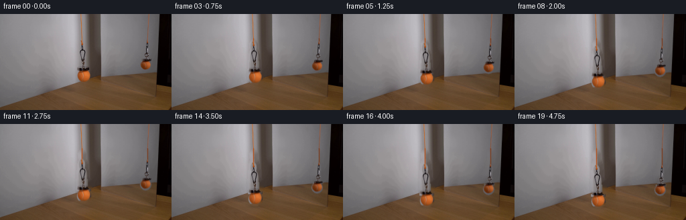
视觉工具实际返回图片 9
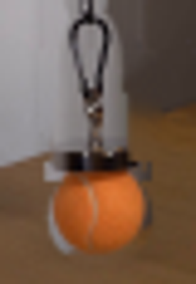
视觉工具实际返回图片 10
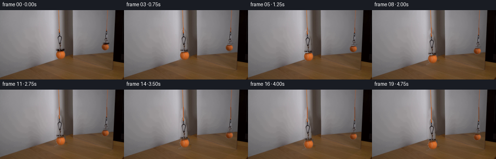
保存候选 4 份；完成命令 13 次；可验证图片返回 10 张。原始 API 响应与完整日志保留在本地。